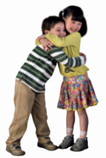
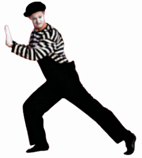

Іноді іншим людям навіть не потрібно говорити нам, як вони почуваються. Ми можемо дізнатися про це, просто подивившись на них. Ми виражаємо свої почуття та емоції за допомогою міміки обличчя, а також рухів і поз нашого тіла. Чи бачив ти колись виступ міма? Міми імітують різні дії лише за допомогою жестів і рухів. Здається, ніби вони піднімаються сходами, нюхають квітку або штовхають дуже важку коробку. Але насправді немає ні сходів, ні квітки, ні коробки! Кожен може займатися мімікою. Щоб зобразити собаку, ми стаємо навкарачки, а щоб показати, що летимо як літак — розправляємо руки в сторони та імітуємо його політ. Це дуже весело! Також ми передаємо повідомлення за допомогою жестів. Наприклад, щоб показати, що треба сидіти тихо, ми прикладаємо вказівний палець до губ, а щоб попросити слово на уроці — піднімаємо руку. А ще ми кажемо комусь про свою любов, міцно обіймаючи цю людину.
Читаємо інформаційний текст
1 Прочитай цей текст про мову тіла (вираження за допомогою тіла).

